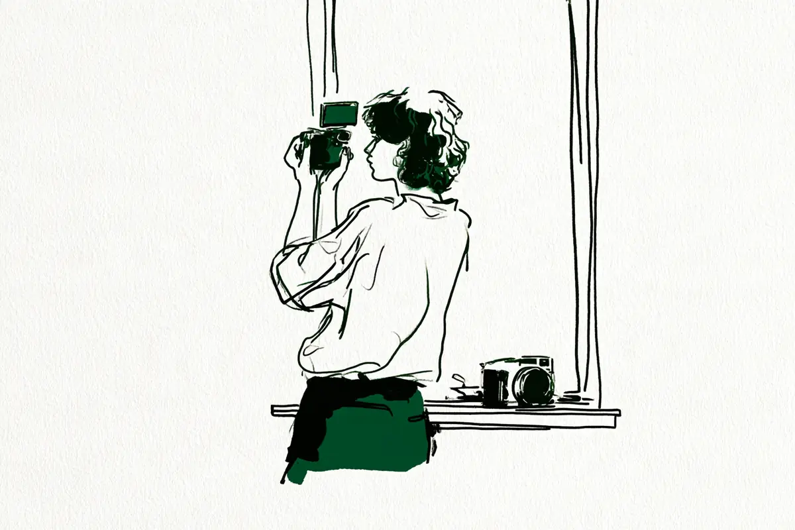

この記事には広告(アフィリエイトリンク)が含まれます。
現在地: 買う前に迷ってる
富士フイルム X-M5の後悔・デメリット、買った人の不満と手放した理由

X-M5を自分で買った・使っていると書いた54人の声を集めました。X-M5にはのぞき窓(ファインダー。言葉の意味)がなく、公式の仕様に本体の手ブレ補正の記載がありません。
- X-M5を買ったことを「後悔した」と書いた人は、数えた中では見つかりませんでした。「後悔」の語があるのは、買って後悔はないと書いた人、2か月で手放したことに後悔はないと書いた人、前の機種を手放したことについて書いた人の3人です
- 本体を手放した・替えた人は11人(売った・手放したと書いた9人と、替えたとだけ書いた2人)。11人のうち5人はのぞき窓がないことを挙げ(1人は手放した理由ではなく、次の機種を選んだ理由として)、うち2人は手ブレ補正がないことも挙げています。残りはバリアングル・持ち歩く大きさ・機材の整理などで、3人は不満を書いていません
- 不満はファインダーがない・ボディ内手ブレ補正がない・小ささゆえの操作・グリップ・バリアングルなどに分かれ、どれが多いかは分け方で変わります(早見表)
- 手放した側の候補を先に全員読み、残りは途中で打ち切った集め方なので、割合としては読めません(数え方の偏り)
X-M5は、富士フイルムが2024年11月28日に発売したミラーレス(言葉の意味)で、センサーはAPS-C(フルサイズより一回り小さい規格。言葉の意味)。XM5(ハイフンなし)とも書かれます。2026年10月31日の時点で公式の製品一覧に載り、公式通販の4商品とも入荷待ちでした(公式の数字)。私はカメラを持っていないので、人の声を集めて整理する側で、買う・買わないはすすめません。
- まだ買う前で、後悔しないか知りたい → 早見表、「後悔」と書いた人、手放した・替えた人、ファインダーの節、公式の数字と値段
- 買ったばかりで、思ったように撮れない → 操作・グリップの節、そのほかの困りごと
- 使っていて物足りなくなった → 手放すか迷っている人とX-E5が出てからの話
目次
- X-M5のデメリット・不満の早見表: 種類、人数、その人がどうしたか
- X-M5を買って「後悔」と書いた人は見つからなかった: 否定した2人と、使わなくなった人
- X-M5を手放した・替えた11人: 行き先と理由を、人ごとに
- X-M5のデメリット「ファインダーがない」: 17人の中身は日中の画面・古いレンズ・覗いて撮りたい
- X-M5のデメリット「ボディ内手ブレ補正がない」: 公式は動画の電子防振だけ
- X-M5の操作・グリップ・バリアングル: 小さいゆえの誤操作と押しにくさ
- X-M5のそのほかの声: バッテリー、熱、AF、色、起動、不具合、大きさ、レンズ、ソフト、金額
- X-M5を書いた人の立場: 経験者と、最初の1台の人
- X-M5に満足した人の声: 色、軽さ、2台持ちのふだん用
- X-M5の公式の数字と販売状況(2026年10月時点)
- 数え方と偏り
- X-M5は買わない方がいい?読んだ範囲の答え
X-M5のデメリット・不満の早見表: 種類、人数、その人がどうしたか
54人のうち不満を1つでも書いた人は35人で、本体・レンズ・撮り手側を同じ細かさ(1つの話題=1行)で分けました。私の読み方で、1人が2つ以上に入ります。右の列は、その行でいちばん多かった結果の人の例で、1人ずつの話です。人数は集め方の影響を受けます(数え方の偏り)。
表の中の言葉の意味
- ファインダー: 目を当ててのぞく窓(言葉の意味)。EVFは電子式のもの。外付けの光学ファインダーは構図だけを見る後付けの窓
- ボディ内手ブレ補正(IBIS): 本体の中でセンサーを動かして揺れを打ち消す仕組み(言葉の意味)
- バリアングル: 背面の画面が横に開いて回る方式。上下に傾くだけの方式がチルト
- 瞳AF: 人の目を見つけて自動でピントを合わせる機能(AF=自動のピント合わせ。言葉の意味)。MF(マニュアルフォーカス)は手で合わせること
- ISOオート: 暗さに合わせてISO感度を自動で上げる機能(言葉の意味)
- キット: 本体とセットのXC15-45mm。F値の数字が大きいレンズが「暗いレンズ」(言葉の意味)。単焦点は写る範囲が決まったレンズ(言葉の意味)。GRはリコーの、レンズが固定の小さなカメラ(コンデジ)
| 種類(私の読み方) | 書いた人数 | その人がどうしたか(例) |
|---|---|---|
| 本体 | ||
| ファインダーがない(日中の画面・MF・覗いて撮りたい・あればよかった。うち5人は手放した・替えた理由に) | 17人 | 古いレンズで不便 → 使い続けている |
| ボディ内手ブレ補正がない | 8人 | 悪い点に挙げたうえで、使い続けている |
| 操作(ボタン・ダイヤル・誤操作・物理スイッチ) | 13人 | 前面ダイヤルで設定が変わる → 楽しんでいると回答 |
| グリップ・持ちにくさ | 7人 | 前が重くなる → 軽いレンズに替えた |
| バリアングル | 4人 | 開く画面が嫌 → 手放した |
| バッテリー | 3人 | 画面を明るくすると減る → X-E5へ替えた |
| AF(瞳AFで背景にピントが抜ける) | 1人 | 個体差か分からない、と書いて使い続ける |
| 色・写り(黄色被り・しっくりこない・明るい部分の強さ) | 3人 | しっくりこず → コスプレ撮影だけに持ち出す |
| 高画素・暗所(フルサイズとの比較) | 1人 | 余裕がない → 手放すか迷っている |
| 起動・再生のもたつき | 2人 | もたつく → 使い続けている |
| 動作の不具合(設定が戻る・電源が切れない) | 1人 | 富士フイルムに相談中 |
| 大きさ(毎日持つには・走りながら・GRより厚い) | 3人 | 毎日持つには大きい → 手放した |
| 出番を手持ちの別の機種に取られる | 2人 | X-E5の後に出番が減った → 売らずに保有 |
| 熱(動画の熱停止・星景の長い露光) | 2人 | 動画で止まる → 冷却ファンを付けて使う |
| ストラップ(長さ・取り付けの形) | 2人 | 取り付けが合わない → 使い続けている |
| 塗装がはげた | 1人 | 1年半ではげてきた → 愛用は変わらない |
| マニュアルフォーカス(ファインダーなしでのピント合わせ) | 2人 | ピントの拡大に手間 → 使い続けている |
| レンズ | ||
| キットが暗い・暗所で明るいレンズが欲しい・XF23mmの画 | 3人 | 暗所で明るいレンズが欲しい → 使い続けている |
| 撮り手側 | ||
| 撮る側・撮られる側のハードル | 1人 | 防湿庫に入る日が増え → 手放した |
| パソコンのソフト・アプリ | 2人 | 現像ソフトと相性が悪い → 使い続けている |
| 金額・オーバースペック | 1人 | 安いカメラに替えたいと相談中 |
並びは人数順ではありません。行の分け方で順位が変わります(操作・グリップ・バリアングルの3行をまとめれば15人)。不満を書かずに手放した・替えた・考えた人が5人いて、表には入っていません。良い点も入れていません。
54人の結果を、購入リンクの有無で分けて数えると、こうなります。購入リンクの有無は、本文に商品リンクや広告の表記があるかを、保存したページで機械的に確かめました。noteの商品カードや共有リンクだけの6人は判定できず、右の列に入れていません。
| 結果(私の読み方) | 人数 | うち購入リンクがないと確かめられた書き手 |
|---|---|---|
| 満足 | 11人 | 5人 |
| 満足と不満の両方を書いて使い続けている | 22人 | 11人 |
| X-M5を残して、別の機種を足した | 1人 | 1人 |
| 手放した・替えた | 11人 | 8人 |
| 手放す・替えることを考えている | 4人 | 2人 |
| 買い足しを考えている | 1人 | 1人 |
| 困りごとだけで、評価はない | 3人 | 2人 |
| 買った直後で、評価はまだ | 1人 | 1人 |
満足11人のうち購入リンクのあるサイトの書き手は6人です。手放した・替えた11人は、売った・手放した・下取りに出したと書いた9人と、替えたとだけ書いた2人(次の節)。替えたとだけ書いた2人のうち1人は、2025年にX-M5を3回買った人で、買い直しの間に手放したかは書いていません。
X-M5を買って「後悔」と書いた人は見つからなかった: 否定した2人と、使わなくなった人
検索の上位には、買って後悔したという題の海外の掲示板(Reddit)の投稿もありますが、書き手を確かめられないので数えていません。数えた54人で「後悔」の語を自分のことに使ったのは3人で、X-M5を買ったことを後悔した、と書いた人はいません。with photographの書き手は、2か月で下取りに出した側です。
下取りに出しても当然数万円の損差が生じたわけですが、実のところ後悔は全くしておりません。
手放したことへの後悔はない、という意味です。kEigoさん(カメラの紹介もしているサイトです)は、X-M5を動画の専用機にして買って後悔はない、と書きました(2026年)。その使い方での話で、同じ記事に動画の熱停止も書いています(そのほかの節)。桜橋さん(カメラの紹介もしているサイトです)の「後悔」は、X-T5を手放したことについてで、後悔はない、と(2026年)。
このサイトでは、後悔・使わなくなった・無駄だった、のどれかを本人が書いていれば後悔の側として数えます。当たるのはRmelwさんの1人で、リコーのGRが抽選で買えず、代わりにX-M5にしました(2026年)。
結果として、毎日カバンに入れるには少し大きく感じられ、防湿庫でお留守番をする日が増えてしまったのです。
旅行とイベントに数回持ち出したあとに手放し、今もGRの抽選を待っています。近い人が2人。Harushikaさん(カメラの紹介もしているサイトです)は、発売日に買って1年8か月の記事で、こう書きました(2026年)。
X-E5を購入してから、X-M5を持ち出す機会はガクッと減ってしまった。
「使用頻度が少ないのは、X-M5が悪いからではない。」と書き、売ろうと何度も考えたが手放せずにいる、と。不満は各節に。はるとさんは、撮った写真がしっくりこなくて、コスプレの撮影のときにしか持ち出していません(2026年)。数えなかった側には、題に「後悔がない」と書いた人もいます(数え方の偏り)。
X-M5を手放した・替えた11人: 行き先と理由を、人ごとに
本体を売った・手放した・下取りに出したと本文に書いた人は9人。別の機種に替えたとだけ書いた人は2人で、3回買って12月の手持ちの一覧にない人と、「決別」と題して次の機種に移った人です。行き先は、富士フイルムのレンズ交換式5人(X-T5・X-T30 III・X-E5が3人)とレンズ固定のX100VI 1人。他社1人(LUMIX G100D)、書いていない4人。11人のうち購入リンクのあるサイトの書き手は2人、判定できない人が1人です。のぞき窓がないことを挙げた人が5人いて、ほかの理由は1人ずつ違います。
のぞき窓がなくて、X-T30 III・X-E5へ替えた3人
sailin' shoesさんは、通勤用に重いフルサイズの代わりとしてキットを買いました(2026年)。相棒になった、と書いた翌月に新宿の店で売り、X-T30 IIIを予約しました。
ファインダー無しではピントがまったく見えなかったので、広角の風景しか撮れなかったのだった。
13万4千円で買って11万円で売れた、とも。ブログ「タイトルいつ決めるのさ」の書き手(カメラの紹介もしているサイトです)は、2024年末にサブとしてキットを買った人です。2026年2月に下取りに出してX-E5にしました。
やはり ” ファインダーが無い ” というのが思っていた以上に使い難かったのです･･･。
画面を最大まで明るくしても、日中の屋外ではピントの位置が分かりにくかった、と。「これはこれで確かによいカメラだと思うのですが、やはり私にはファインダーが必要でした。」とも書いています。abeshiさんは、大きな機種の代わりにX-M5を買い(2024年)、8か月後に「決別」と題してX-E5へ移りました。売ったとは書いていません。
日中背面でモニタを見てると見にくくてこれもまた使いにくい。
AFの物理スイッチがないこと、グリップがなく付けると結局重くなることも挙げ、「だもんで、思ったより使いたいという気持ちになりにくい。」と。
カメラを持ちすぎて手放し、ファインダーと手ブレ補正のあるX-E5にした1人
with photographの書き手は、2025年8月にX-E5へ替えました。
結果的にX-M5を僅か2ヶ月で手放すことになってしまいました。
手放した直接の理由は持ちすぎで、そうでなければ残したかった、と。X-E5を選んだ理由は、のぞいて撮りたいことと、朝晩や屋内が多いので本体の手ブレ補正が欲しいこと。年末の買ってよかったものの記事では、「実は今でもX-M5は買い戻したいカメラの上位だったりします。」と。
ファインダーと手ブレ補正の両方で手放し、LUMIX G100Dを買った1人
Walkerさんは、2026年1月の記事でX-M5とはもう別れたと書き、同じ月にファインダー付きのLUMIX G100Dを買いました。9月の記事の理由です。
ボディ内手ぶれ補正とEVFがないのがつらいことがあって手放しちゃったけど。
「X-M5大好きだったんだよなぁ。」と同じ段落に書いています。
バリアングルが嫌で手放した1人
H_HIROYAさん(カメラの紹介もしているサイトです)は、発売日にキットを買いました(2024年)。手ブレ補正・ファインダー・バッテリーの容量を気になる点に挙げ、こう締めています。
自分はこのカメラを買ってとても良かったなと感じています。
2026年10月のニコンZfの記事では、X-T4もX-M5も「液晶をパカパカ、くるくるするのが嫌すぎてどちらも手放してしまいました。」と振り返っています。
持ち歩く大きさと、撮る・撮られるハードルで手放した1人
Rmelwさんの話は上の節に。撮る側の負担と撮られる側の気まずさも理由に書き、X-M5だけの話にはしていません。持ち出さなくなった人の声は軽くしても持ち歩かなかった人に。
不満を書かずに手放した・替えた3人
るろかめさんは、2025年6月にキットを買い、11月にX-E5を買って、機材を整理するなかで買取に出しました。「別にX-M5に不満があった訳ではなく」、と。山と写真さんは、山歩きのためにX-M5を買った翌月に、こう書きました(2025年)。
複数台持ちしても偏るのは明白だから、一番欲しかったカメラを見つけたので衝動的に買い替えてしまいました。
同じ月の記事で、行き先はX-M5を買うときにいちばん欲しかったX100VIだと分かります。はりがや珈琲さんは、2026年5月に下取りに出してX-T5と2本のレンズを買い、X-M5の不満は書いていません。
同じ機種を3回買って、主力をX-S20にした1人
やまぐちゆうきさんは、2025年にX-M5を3回買った人です。最初の購入のときは、こう書いていました。
さすがにコンパクトすぎて使いにくい場面もありますが、新しいカメラを購入してもX-M5は手放さずに持っておきたいです。
12月の振り返りでは「現在私の主力カメラはフジフイルムのX-S20です。」とあり、手持ちの一覧にX-M5はありません。売ったとは書いておらず、X-M5だけの不満も書いていないので、替えたとだけ書いた人に数え、行き先は「書いていない」に入れました。
手放すか迷っている4人、別の機種を足した1人と、X-E5が出てからの話
X-T5のサブとして使っていたatsucamさんは、2025年12月にX-E5を買ってから迷っています。
X-E5を買った今、X-M5を手放すかとても悩んでいます。
桜橋さんは、フルサイズの高画素の余裕はX-M5にはないと書く人です。2026年7月に「ズームのできるコンデジがあればX-M5を手放してもいいかもしれない」と書きました。8月には富士フイルムの機材ごと手放すかを考えて保留し、10月の自己紹介では手持ちにX-M5が残っています。キヤノンを使うまなとさんは、サブとしてX-M5を買った2か月後に迷いました(2026年)。
そしてX-M5を手放して、Canonにまとめるのか。
X-M5の不満は書いていません。知恵袋の質問者は、写りには満足しているが性能が余り、お金の余裕もないので安いカメラに替えたい、という相談でした(2026年)。こじろ+さんは、手放さずに別の機種を足した人です(2026年)。
でも、やっぱりX-M5のファインダー無し問題とバリアングルへの拒否感が拭えなかった。
SIGMAのfp Lを買い、X-M5は3番手に。別に、旅行用に望遠レンズか別の機材かを迷う知恵袋の質問者が1人います(2026年)。売るといくらになるかを無料で知る方法は売るなら、まず無料で相場を知るに。
2025年8月に出た同じ富士フイルムのX-E5を買った人は、54人のうち8人です。4人はX-M5を手放した・替えた人で(with photograph・abeshi・タイトルいつ決めるのさ・るろかめ)、4人は手元にあります。迷うatsucamさんと、出番が減ったHarushikaさん。機材の整理でニコンのZ30の方を手放した青木秀平さんと、動画用にしたkEigoさん(カメラの紹介もしているサイトです)。どちらが合うかは読んだ声からは言えません。
X-M5のデメリット「ファインダーがない」: 17人の中身は日中の画面・古いレンズ・覗いて撮りたい
X-M5に、のぞき窓(ファインダー)はありません(富士フイルムの仕様ページに、ファインダーの項目がありません)。これを不満や気になる点に書いた人は17人で、手放した・替えた11人のうち5人が挙げています(1人は次の機種を選んだ理由として。上の節)。中身は3つに分かれます。
日中に画面が見にくい。 4人。abeshiさん・タイトルいつ決めるのさの書き手のほか、Me-ningsの書き手は日差しの強い場所で(2025年)。知恵袋の回答者は明るい場所で、と(2025年)。もう1人の知恵袋の回答者は、見づらいときがある、とだけ(2025年)。
古いレンズ・手でピントを合わせるとき。 フィルムカメラを使っていたみっちーさんは、X-M5にスーパータクマーを付けた日にこう書きました(2026年)。
ただ、やっぱりX-M5にファインダーがないことをデメリットに感じる一日でもありました。
ニコンのZ5から軽さを求めて替えたKikyoさんは、手でピントを合わせるレンズを付けたときの話です(2026年)。
しかしX-M5ではマニュアルフォーカスに大きな問題がある…
ピント確認の拡大が半押しで戻らないことで、別のボタンに割り当てて使っています(表ではMFの行の人で、みっちーさんと2人)。Harushikaさんも、手で合わせるレンズでのぞき窓がないことを挙げました。
覗いて撮りたい・あればよかった。 10人。sailin' shoes・with photograph・こじろ+・Walkerの4人は上の節に。H_HIROYAさん、外付けの光学の窓を足したうえで「X-M5にファインダーが欲しい。」と書く霜月まるさん(2026年)。目の都合で電子式の窓を望むhiroshixさん(カメラの紹介もしているサイトです。2025年)と、のぞき窓とチルトを望むatsucamさん。Kudo Takumiさん(カメラの紹介もしているサイトです)は、動画では画面で足りるが、たまに欲しい、と(2025年)。てててさんは、X-M5を買った少しあとにファインダー付きのX-T30 IIIが出て、こう書いています(2026年)。
今更買い換えようとは思わないが、私にはX-M5よりX-T30Ⅲの方が合っている。
逆の声もあります。ふじさんぽ。さんはのぞき窓なしに慣れてきた、と(2025年)。のぞき窓がないのは仕様で、日差しの下で撮るか、古いレンズを使うか、覗いて撮りたいかで効き方が変わります。
X-M5のデメリット「ボディ内手ブレ補正がない」: 公式は動画の電子防振だけ
仕様ページの手ブレ補正の欄は、電子防振が「あり(動画のみ)」で、本体のセンサーを動かす補正(IBIS)の記載はありません。不満や気になる点に書いた人は8人で、手放した・替えた人のうち、手放した理由に挙げたのはWalkerさん、次の機種を選んだ理由に挙げたのはwith photographの書き手です。知恵袋の回答者は、良い点と悪い点を並べる中でこう書きました(2025年)。
●カメラ本体に手振れ補正がない。
atsucamさんは、X-E5で撮った写真と比べて小さなブレに気づいた人。H_HIROYAさんは、キットのレンズは暗いので補正なしの本体と相性が悪い、と。hiroshixさんは手ブレ補正も欲しい、Kudo Takumiさんはデメリットの1つに、Harushikaさんは気になる点に挙げるだけです。本体の補正がないことは、手放した・替えた2人の理由に入っていて、ほかの6人は使い続けています。暗い場所で補正なしの機種がブレる仕組みはオートなのにブレるのはなぜ?に。
X-M5の操作・グリップ・バリアングル: 小さいゆえの誤操作と押しにくさ
操作。 13人。同じ「誤操作」でも、触れる部品が違います(前面のダイヤル3人、画面のタッチ2人、ボタン4人)。知恵袋で2つの質問に答えた回答者は、キヤノンから初めて富士フイルムを使った人です(2025年)。
前面ダイヤルにうっかり触れるので高確率で設定が変わってます。
押したいボタンが押しにくいことも挙げ、否定しながらも楽しんでいる、と。digi-cam.netの書き手(カメラの紹介もしているサイトです)は、1年のレビューの欠点の1つ目を見出しでこう書きました。
X-M5の欠点①：Qボタンが超絶押しにくい
2つ目は前面のダイヤルに触れてISOオートが外れやすいこと、3つ目は電源の入れ直しや再生のもたつきです。Kikyoさんは、こう書きます。
小ささの１番の代償は操作性ですね。
握りにくく、ボタンも押しづらい、と。Me-ningsの書き手は小さすぎてタッチの誤作動が出るのでタッチパネルを切り、知恵袋のもう1人の回答者は、持つと手が画面にかかって誤操作する、と。ずみさんは、シャッターのボタンを押しづらく感じてソフトレリーズ(ボタンに付ける出っ張り)を買いました(2025年)。残る7人は、Qボタン2人、後ろのダイヤルの重さ1人、前面のダイヤルに触れる指1人、小さすぎる場面1人、物理スイッチ1人。操作しづらいが慣れた1人は上の知恵袋のjel********さんで、名前は読んだ一覧に。誤操作の声は、手放した理由より、使い続けている人の困りごととして出ています。
グリップ・持ちにくさ。 7人。TADACAN photoさんは、X-T200から替えてX-M5を買った人です。グリップが浅いので軽めのレンズでも前が重くなる、としてXF35mm F2に替えました(2025年)。Kudo Takumiさんは、こう書いています。
小型の弊害なのか、グリップがとても難しいです。
親指も安定しないので、別売りのサムグリップと3Dプリンターの部品で自分に合わせています。やいとさんは手が大きくて合わない、と。Harushika・H_HIROYA・Kikyo・abeshiの4人は上に。
バリアングル。 4人。H_HIROYAさんは手放した理由、こじろ+さんは拒否感、Kudo Takumiさんは苦手、Harushikaさんは横構図で低い・高い位置から撮るときの不便さ。逆に、良い点として書いた人もいます。
下から見上げて空を入れたい時は、X-M5のバリアングル液晶は液晶の角度の変えやすくてこうゆう時に便利。
Harushikaさんも、縦構図ならむしろ良い、と書いています。
X-M5のそのほかの声: バッテリー、熱、AF、色、起動、不具合、大きさ、レンズ、ソフト、金額
バッテリー。 3人。公式の静止画の撮影可能枚数は、エコノミーモードで約440枚、ノーマルモードで約330枚です(業界の統一基準(CIPA)によるかは仕様表に書かれていません。公式の数字)。カメラを再開したふじさんぽ。さんは、暑い日の撮影で切れました(2025年)。
無情にも、カメラのバッテリー切れを知らせるアラームが…。
タイトルいつ決めるのさの書き手は画面を明るくすると減ること、H_HIROYAさんは容量です。
熱。 2人。kEigoさんは、動画の専用機として使う中で、こう書きました(2026年)。
ファンがないと動画4K24p・クーラーのついた室内でも30分ぐらいで熱停止します。
冷却ファンを付けて使っていて、買う前の注意点として、のぞき窓・防塵防滴・本体の手ブレ補正がないことと熱の4つを挙げています。星空を撮るTADACAN photoさんは、長い露光のための電源の工夫を書いた人です(2026年)。
AF。 1人。Harushikaさんは、XF27mmを付けて瞳AFを使うと背景にピントが抜けることが多い、と書き、個体差かどうかは判断できない、と添えています。
色・写り。 3人。sailin' shoesさんは、買って10日ほど写真が黄色っぽくなることに悩み、のちに設定が原因だったと書いています。はるとさんはしっくりこない(後悔の節)。青木秀平さんは、気に入ったうえで気になった点を3つ並べました(2025年)。
・Adobeとの相性が悪い。
RAW(あとで仕上げるための生のデータ)の現像ソフトとの相性のほか、起動が体感1.5秒と遅めなこと、明るい部分のコントラストが強いことです。起動・再生のもたつきはdigi-cam.netの書き手と合わせて2人。
動作の不具合。 1人。ぽちろぐの書き手(カメラの紹介もしているサイトです)は、設定が戻る・ISOオートが外れる・電源が切れないなどが起きました(2025年)。初期不良かもしれない、と富士フイルムに相談中で、その後の記事は見つかりませんでした。1台の話です。
大きさ・塗装。 大きさは3人で、3人ともGRなど小さなカメラと比べた文脈です。Rmelwさんは毎日持つには少し大きい。セン17さん(カメラの紹介もしているサイトです)は、薄い単焦点を付けてもGRのようには使えない厚みと重さ(2026年)。ランニング中も持つHarunaさんは、こう書きました(2026年)。
だったらそれでいいじゃないか、という話だが、走りながら持つとX-M5はちょっと大きく感じる。
1年半で塗装がはげてきたとも書き、愛用のカメラであることは変わらない、と続く人です。公式の質量は約355g(バッテリー・カード込み)で、重さを挙げたのは、GRと比べたセン17さんだけです。
レンズ。 3人。H_HIROYAさんはキットのXC15-45mmが暗く補正なしの本体と相性が悪いこと。セン17さんは暗い場所でより明るいレンズを使いたくなること。おずさん(カメラの紹介もしているサイトです)はXF23mm F2.8をスナップで使うと画がうるさくなりがちなこと(2026年)。買い方は、キット11人、本体と別のレンズ22人、分からない人21人。
ソフト・ストラップ・金額。 ソフト・アプリは2人(Kudo Takumi・青木秀平)。ストラップは、取り付けが穴(スリット)の形(hiroshix)と、画面で撮るので長さが要る(atsucam)の2人。金額は知恵袋の質問者1人(上)。ほかの知恵袋の相談(レンズ選び・傷)は読んだ一覧に。
X-M5を書いた人の立場: 経験者と、最初の1台の人
経験者(上位機や他社機を併用、前に別のカメラを使った人)は41人。最初の1台と本文で確定できる人は2人(ずみさん・ぐちおさん)で、どちらも手放していませんが、1人は買ったばかりです。どちらとも分からない人が11人。手放した・替えた11人は、経験者9人・分からない人2人です。最初の1台の人数は集め方の影響を受けます(数え方の偏り)。
X-M5に満足した人の声: 色、軽さ、2台持ちのふだん用
満足と読んだ11人の内訳は、経験者9人、分からない人2人で、購入リンクのあるサイトの書き手が6人います。不満を1つでも書いた人は「両方」に入れたので、満足の人数は分け方で変わります。本文に出したのは、購入リンクのない5人で、残りは読んだ一覧に。
X-T3・X-T5と3台で使うたぐさんは、XF23mm F2.8を付けた記事で、こう書きました(2026年)。
やっぱり、X-M5を買ってよかった。
ゆーやchさんは、七五三の依頼の撮影をXF35mm F1.4で撮り、2025年の自分のMVPに選びました。
その中でも圧倒的に自分の撮影スタイルとハマったカメラが「X-M5」です。
SIGMAのfpを手放した翌日にキャンセル品のキットを買った幸さんは、サブ機の条件に全部当てはまる、と(2025年)。
X-M5は全ての条件に当てはまっているので今のところなんの問題もありません。
GRⅢxを使うdimさんは色に惚れ込んで決めました(2025年)。キヤノンのEOS M100から替えた芹さんはX-T30 IIIと迷ってX-M5に(2025年)。
X-M5の公式の数字と販売状況(2026年10月時点)
声に出た不満を、富士フイルムの公式ページの数字と並べました。仕様ページ・製品ページ・ニュースリリース・製品一覧・公式通販のフジフイルムモールから、2026年10月31日に取得した値です。
| 項目 | 公式の記載(2026年10月31日取得) |
|---|---|
| 発売 | 2024年11月28日 |
| 質量 | 約355g(バッテリー・カード込み)。本体のみ約307g |
| 撮影可能枚数(静止画) | エコノミーモード時 約440枚、ノーマルモード時 約330枚。仕様表にCIPAの記載なし |
| 手ブレ補正 | 電子防振 あり(動画のみ)。ボディ内(センサーを動かす)補正の記載なし |
| ファインダー | 仕様表に項目なし。製品ページ・ニュースリリースにも記載なし |
| 防塵防滴 | 本体の記載なし(買う前の注意点に挙げた人が1人。不満に書いた人は、この集め方では見つかりませんでした) |
| センサー | APS-C、約2610万画素 |
| 背面モニター | 約104万ドットのタッチパネル。製品ページにバリアングルの記述 |
| 端子 | USB Type-C、マイク用とヘッドホン用の3.5mm端子、HDMIマイクロ端子 |
| 現行の構成 | ボディと、XC15-45mm付きのレンズキット(各ブラック・シルバー)。製品一覧のミラーレスに掲載 |
| 公式通販の価格(税込、2026年10月31日時点) | ボディ136,400円、レンズキット152,900円 |
2026年10月31日のフジフイルムモールの表示では、4商品とも「カートに入れる」のボタンがあり、どれも入荷待ちで、支払いから約6週間後の出荷、とありました。質量の数字の読み方は重さの記事に。仕様は変わることがあるので、表の数字も自分で仕様ページを開いて確かめてください。
手放した・迷った人の理由は、のぞき窓がない、本体の手ブレ補正がない、横に開く画面が合わない、持ちすぎ、毎日持つには少し大きい。それに、X-E5のあとの整理、欲しかった別の機種、キヤノンにまとめるか、安い機種に替えたい、でした。楽天市場の検索リンクを1つ置きます。置く条件は、購入リンクのない本人の体験が2人以上あり、不満の側の声があることです。X-M5は購入リンクがないと確かめられた本人が31人、うち不満の側(満足・買った直後以外の結果の人)が25人なので当てはまりました。判定できない6人は数えていません。私のおすすめではなく、いまの値段や在庫の有無を確かめるためのリンクで、在庫と価格は日ごとに変わります。X-E5・X-T30 III・X-T5・X100VIは別の機種なので検索語に含めていません。下のリンクは『FUJIFILM X-M5』の名前で楽天市場を検索します。
数え方と偏り
数えたのは、自分でX-M5を買った、または使っていると書いた54人です。内訳はnote38人・個人ブログ9人、知恵袋7人(困って質問した人か、答えた人)。X-E5・X-T30 III・X-T50・X-S20・X100系の人は数えず、この機種から替えた人・へ替えた人は数えています。家族の機体・予約だけ・触っただけの人と、同じ型番のソニーのイヤホンの記事は数えていません。分け方は私の読み方です。
今回は人数の上限を60人にして、手放した・替えた・手放しを考えた側の候補を先に全員読み、残りはnoteの機械的な順で足して54人で打ち切りました。題や所有の語の近くに手放した・替えたと書いていない本人30人以上(購入の報告・作例が中心で、全文は読んでいません)は、上限のため数えませんでした。その中には、題に「後悔がない」と書いた人も、グリップに少し不満と書いた人も、1回しか持ち出していない人もいます。だから54人の中の手放した側は実際より多く見えている可能性があり、後悔・不満・最初の1台の人数も、割合としては読めません。
偏りは、ほかに4つあります。
- 探した語の偏り。「後悔」「デメリット」「手放した」「売った」「買い替え」「下取り」「さよなら」などの語で探しました(Googleは20ページ、noteは57語、知恵袋は40語)。手放した11人のうち題で見つかったのは6人で、残る5人は次の機種の記事や機材の整理の記事の中にいました。ほかの機種の記事と違って手放した側を先に全員読んだので、手放した人の数はほかの記事と比べられる数ではありません
- 「後悔」の語で検索すると、照合できないReddit・動画と、購入前の相談が上に並びます(2026年10月31日、私の検索で)。上に出る本人6人のうち4人は購入リンクのあるサイトの書き手で、4人は手元に残しています
- 購入リンクか広告の表記があるサイトの書き手17人には「(カメラの紹介もしているサイトです)」と添えています。引いた記事にはなく、同じ書き手の別の記事にある人も同じ注記にしました。判定できなかった6人には添えていません
- 経験者が41人います。声の年は2024年12月〜2026年10月で、2024〜2025年の声には発売直後の品薄の時期の話があります
最初に買ったカメラの記事の富士フイルムの節は、最初の1台として買った人だけを読んだものです。X-M5の話が出たのは2人(最初の1台がX-M5だったぐちおさんと、X-T200の4年後にX-M5を買ったTADACAN photoさん)でした。今回は経験者や知恵袋の相談も含めたので54人になり、手放した・替えた人が出ています。集め方が違うだけで、どちらかが間違いということではありません。
数えなかったものは、次のとおりです。
- 本人の購入体験が本文にない、選び方・比較・一般論の記事(note十数人・ブログ数件。読んだ一覧に名前)と、伝聞
- 販売店・レンタル・買取店・メディアのページ、販売の今後についての噂、Reddit・YouTube・Instagram・X・Threads(照合できないため)
- 価格.comの掲示板とレビュー。規約(私的・非営利目的に限る)のため引用せず、この記事では人数にも入れていません
知恵袋の同じ表示名の回答は1人として数え、伏せ字のIDは別の人として数えています。
X-M5は買わない方がいい?読んだ範囲の答え
買わない方がいい、とも、買った方がいい、とも、読んだ声からは言えません。同じ機種に、のぞき窓がなくてピントが見えないと書いて売った人と、のぞき窓なしに慣れてきたと書いて使い続ける人がいます。横に開く画面への拒否感が消えずに別の機種を足した人と、見上げて空を入れるときに便利と書く人も、同じ仕様を別の形で書いています。
読んだ声にあった形は3つです。のぞいて撮りたくて、同じ富士フイルムのファインダーのある機種へ替えた人。小ささと色を優先して、外付けの窓や冷却ファンを足して使い続けた人。握りやすさとボタンの位置を店頭で確かめてから決める人(店頭で触る)。ここに書いたことは読んだ声の整理で、公式の数字は上の表から自分の目で確かめてください。買う前の順番は初めてのカメラ、最初の一台は何で決めた?、中古で買う人の声は中古の記事に。
ほかの機種の声と、買う前の確認
次に読むなら
この記事で読んだ109件
体験談88件(54人の出典。note 67件、個人ブログ13件、知恵袋8件)、数えなかったnote・ブログ13件、公式ページ8件に分けています。本文で使わなかったものには注記しました。
体験談67件(note 38人の出典)
- note(桜橋)「FUJIFILM X-T5 → X-M5への移行で、失ったもの・得たもの」(経験者、X-T5を手放したことに後悔はない、2026年。カメラの紹介あり。重さの記事でも読んだ人)
- note(桜橋)「もうコンデジで良いんじゃね？」(同じ人、ズームのコンデジがあればX-M5を手放してもいい、2026年。カメラの紹介あり)
- note(桜橋)「GRⅢxとNikon Z5があれば僕には充分だ」(同じ人、富士フイルムの機材ごと手放すかを考えて保留、2026年。カメラの紹介あり)
- note(桜橋)「あらためて自己紹介 | はじめまして！カメラは好きですか？」(同じ人、10月の手持ちにX-M5が残る、2026年。本文では使っていません。カメラの紹介あり)
- note(Harushika)「FUJIFILM X-M5 長期使用レビュー｜ぶっちゃけ今は出番がない理由」(経験者、X-E5の後に出番が減った、グリップ・ダイヤル・バリアングル・瞳AF、2026年。カメラの紹介あり)
- note(Harushika)「FUJIFILM X-M5を購入した理由」(同じ人、発売日に予約購入、2024年。本文では使っていません。カメラの紹介あり)
- note(atsucam)「【FUJIFILM】X-E5を買いました。」(経験者、X-E5の後に手放すか悩む、小さなブレ、2025年)
- note(atsucam)「X-E5を買うか決めきれな日々を過ごしている」(同じ人、ファインダーとチルトが欲しい、ストラップの長さ、2025年)
- note(Rmelw)「【RICOH GR 難民へ】妥協で富士フイルム「X-M5」を買って手放した私が、最後にたどり着いた“究極の正解”」(GRが買えずX-M5、撮る側・撮られる側のハードルと大きさで手放した、2026年)
- note(るろかめ)「短い期間だったけど、ありがとう。私のM5。」(経験者、X-E5の後の整理で買取に、不満はない、2025年)
- note(はりがや珈琲)「ポンコツ写真道... X-M5を下取りに出して」(経験者、下取りでX-T5へ、理由の記述なし、2026年)
- note(Walker)「首を長くして新型PENを待つ私になぜかPEN E-P7が届く」(経験者、手ブレ補正とEVFがなくて手放した、2026年)
- note(Walker)「2026年初カメラ -- LUMIX DC-G100D」(同じ人、ファインダー付きのG100Dを購入、2026年。本文では使っていません)
- note(H_HIROYA)「X-M5レビュー この小ささは癖になる」(経験者、キットを購入、手ブレ補正・ファインダー・バッテリー・Qボタン・グリップ・キットが気になる、買ってよかった、2024年。カメラの紹介あり)
- note(H_HIROYA)「シルバーにひと目ぼれして、半年も持たずに手放した。Nikon Zf」(同じ人、バリアングルが嫌でX-M5を手放した、2026年。カメラの紹介あり)
- note(はると)「写真と絵の記録始めようかな」(経験者、しっくりこずコスプレ撮影だけに、2026年)
- note(山と写真)「さよならX-M5」(欲しかった別の機種が見つかり買い替え、不満なし、2025年)
- note(山と写真)「X100ⅵ買っちゃった」(同じ人、行き先はX100VI、2025年)
- note(山と写真)「x100ⅵ 粟ヶ岳の日の出」(同じ人、X-M5から替えて、2025年。本文では使っていません)
- note(sailin' shoes)「FUJIFILM X-M5を売りに行った。FUJIFILM X-T30Ⅲをネットで予約した。」(経験者、マップカメラで売却、2026年)
- note(sailin' shoes)「FUJINONレンズの沼」(同じ人、ファインダーがなくて困ったのが理由、2026年)
- note(sailin' shoes)「FUJI X-M5の黄色被りが無くなった。」(同じ人、黄色っぽさが消えた、2026年。本文では使っていません)
- note(sailin' shoes)「フジノン XF16-80mmF4 R OIS WRはランチの友」(同じ人、黄色っぽさは設定だった、2026年)
- note(こじろ+)「【カメラ】FUJIFILMからSIGMAへ」(経験者、ファインダーとバリアングルでfp Lを足した、2026年)
- note(まなと)「EOS R8 Mark IIが発表されて、ちょっと困っている」(経験者、キヤノンにまとめるか迷う、2026年)
- note(まなと)「サブ機をお迎えした。そして初めてフジフイルムを手にした。」(同じ人、サブとしてキットを購入、2026年。本文では使っていません)
- note(やまぐちゆうき)「小さい、軽いは正義。X-M5を買った。」(経験者、手放さずに持っておきたい、2025年)
- note(やまぐちゆうき)「来年はカメラを買わない」(同じ人、2025年にX-M5を3回購入、12月の主力はX-S20、2025年)
- note(青木秀平)「FUJIFILM X-M5を使ってみて。とX-E5を買った理由。」(経験者、Adobe・起動・ハイライト、X-E5も購入、2025年)
- note(青木秀平)「機材を整理しました。」(同じ人、Z30を手放しX-M5を残した、2025年)
- note(kEigo)「X-M5が唯一無のカメラでした」(経験者、動画専用機として後悔はない、動画の熱停止、買う前の注意点4つ、2026年。カメラの紹介あり)
- note(yutablogger)「2年憧れたX-M5を購入！スマホ転送や充電のしやすさなど、ふだん使いのリアルをレビュー」(経験者、満足、2026年。本文では人数に入れただけです。カメラの紹介あり)
- note(TADACAN photo)「エントリー機と侮ることなかれ、X-M5の導入の理由と隠れた実力」(経験者、X-T200との入れ替え、2025年。最初に買ったカメラの記事でも読んだ人)
- note(TADACAN photo)「touit32mmを売ってxf35mmf2rwrを買ったわけ」(同じ人、グリップが浅く前が重い、2025年)
- note(TADACAN photo)「X-M5を冷却カメラ化？星景写真での熱対策の限界突破を目指して秘策投入」(同じ人、星景の熱対策、2026年)
- note(てすとてっく)「衝動買いしてよかったカメラ FUJIFILM X-M5」(経験者、満足、2026年。本文では人数に入れただけです。カメラの紹介あり)
- note(セン17)「FUJIFILM X-M5 + VILTROX AF 28mm F4.5はGR4の代わりにならない。実際に使ってわかった3つの理由」(厚みと重さ、暗い場所で明るいレンズが欲しい、2026年。カメラの紹介あり)
- note(ててて)「もし初めてのカメラがFUJIFILMだったら」(経験者、3台目、買ってよかった、2025年。本文では使っていません。最初に買ったカメラの記事でも読んだ人)
- note(ててて)「うそはよくないね」(同じ人、ファインダー付きのX-T30 IIIの方が合っている、買い換えはしない、2026年)
- note(すぎっち)「X-M5を買った本当の」理由は、カメラではなくレンズだった」(経験者、レンズのためのボディ、ファインダー・手ブレ補正なしは承知、2026年。本文では人数に入れただけです。カメラの紹介あり)
- note(Haruna)「X-M5｜クラシッククロームで撮った青」(経験者、発売日に購入して1年、2025年。本文では使っていません)
- note(Haruna)「手のひらサイズの富士フイルム」(同じ人、走りながら持つと大きい、愛用は変わらない、2026年)
- note(Haruna)「XF23mm F2.8｜おにゅーパンケーキレンズ」(同じ人、1年半で塗装がはげてきた、2026年)
- note(ずみ)「旅のお供にFujifilm X-M5を購入した」(最初の1台、シャッターボタンが押しにくくソフトレリーズを購入、2025年)
- note(Kudo Takumi)「自己紹介とX-M5のレビュー」(経験者、デメリット7つ(ファインダー・バリアングル・グリップ・ダイヤル・Qボタン・アプリ・手ブレ補正)、2025年。カメラの紹介あり)
- note(dim)「【ご報告】新たなカメラが仲間入りしたお話。-FUJIFILM "X-M5"-」(経験者、色味に惚れ込んだ、2025年)
- note(やいと)「【カメラ】X-M5について語りたい」(経験者、手が大きくて合わない、2025年)
- note(みっちー)「X-M5でオールドレンズを使ってみた 【Super-Takumar 55mm f1.8】」(経験者、古いレンズでファインダーがないことがデメリット、2026年)
- note(みっちー)「ミラーレスを買ったら写真の楽しさが変わった【Fujifilm X-M5】」(同じ人、街でスナップが増えた、2026年)
- note(相内洋輔)「カメラ初心者ですが、X-M5をお迎えしました」(3週間悩んで購入、満足、2026年。本文では人数に入れただけです。カメラの紹介あり)
- note(ゆーやch)「2025年のMVPはX-M5です」(経験者、七五三の撮影、2025年のMVP、2025年)
- note(おず)「さよならX-T10、こんにちはX-M5 〜X-M5で極限コンパクト運用を目指す〜」(経験者、X-T50と2台持ち、2026年。本文では使っていません。カメラの紹介あり)
- note(おず)「雑記 2026/10/01〜06」(同じ人、XF23mm F2.8はスナップで画がうるさくなりがち、2026年。カメラの紹介あり)
- note(幸)「そして迎えたFujifilmX-M5を2ヶ月使ってみて【作例18枚】」(経験者、fpを手放した翌日に購入、問題なし、2025年)
- note(芹)「富士フイルムのX-M5を買いました」(経験者、EOS M100から、X-T30 IIIと迷った、2025年)
- note(霜月まる)「気になる機」(経験者、ファインダーが欲しい、2026年)
- note(霜月まる)「ちっちゃいカメラ、X-M5。」(同じ人、外付けの光学ファインダー、2025年。本文では使っていません)
- note(たぐ)「X-M5を3ヶ月使ってみて」(経験者、バリアングルが便利、2026年)
- note(たぐ)「X-M5とXF23mmF2.8 R WRはいいな」(同じ人、買ってよかった、2026年)
- note(Kikyo)「軽さを求めてFujifilm X-M5に乗り換えた話」(経験者、Z5から、小ささの代償は操作性、2026年)
- note(Kikyo)「X-M5でマニュアルレンズを快適に使う【Nokton 35mm f1.2】」(同じ人、マニュアルフォーカスの問題、2026年)
- note(ぐちお)「初めてのカメラ（X-M5）を購入」(最初の1台、買ったばかり、2026年。本文では人数に入れただけです。最初に買ったカメラの記事・最初の一台の記事でも読んだ人)
- note(ふじさんぽ。)「夜勤明けの奇跡！〜二郎系とぶどう園、そして悲劇のX-M5〜」(経験者、暑い日にバッテリー切れ、2025年)
- note(ふじさんぽ。)「素人カメラマン」(同じ人、ファインダーなしに慣れてきた、満足、2025年)
- note(まなと)「フジフィルムに触れて気づいたこと。Canonユーザーだから見えた魅力」(同じ人、サブとしての使い方、2026年。本文では使っていません)
- note(やまぐちゆうき)「待ちに待ったX-E5の発表をみて、X-M5を買った。」(同じ人、2回目以降の購入、2025年。本文では使っていません)
- note(桜橋)「フルサイズを4台手放した男が語る、フルサイズが本当に必要な人・必要ない人」(同じ人、フルサイズのボケと暗所は再現できない、2026年。本文では使っていません。カメラの紹介あり)
体験談13件(個人ブログ9人の出典)
- with photograph「FUJIFILM X-M5からFUJIFILM X-E5へのリプレイス – with photograph」(経験者、2か月で下取りに出してX-E5へ、直接の理由は持ちすぎ、手放したことに後悔はない、2025年)
- with photograph「2025年買ってよかったものベスト5 – with photograph」(同じ人、今でもX-M5は買い戻したいカメラの上位、2025年)
- abeshi's snapshots「X-E5: 節目でのカメラ切替・X-M5との決別・入手前夜 : abeshi's snapshots V5.5」(経験者、AFの物理スイッチ・日中のモニター・グリップ、X-E5へ、2025年)
- abeshi's snapshots「X-M5: 小さいカメラを持っていこう1 …でも、ちょっとUIが⁉︎ : abeshi's snapshots V5.5」(同じ人、小さい機種として購入、2024年。本文では使っていません)
- digi-cam.net「X-M5の欠点はこれ！1年みっちり使って感じた忖度なしレビュー！ | digi-cam.net」(経験者、Qボタン・前面ダイヤル・もたつき、ファインダーとIBISは気にならなかった、2026年。カメラの紹介あり)
- Me-nings「FUJIFILM X-M5を3ヶ月使ってみてわかったことと作例 - Me-nings」(経験者、小さすぎて誤タッチ・日差しで画面が見にくい、2025年)
- トブエ(マジ反抗期だった次男)「FUJIFILM X-M5をはじめてめてのカメラに選んだ初心者 | マジ反抗期だった次男」(コンデジからの経験者、物撮り用、満足、2025年。本文では人数に入れただけです。カメラの紹介あり)
- マキシマリスト(マキシマリストが選ぶ逸品)「Fujifilm X-M5レビュー │カメラ初心者が使って感じたリアルな魅力【25作例】 | マキシマリストが選ぶ逸品」(初めてのミラーレス、満足、2026年。本文では人数に入れただけです。カメラの紹介あり)
- （新）タイトルいつ決めるのさ「FUJIFILM「X-M5 / XC15-45mm F3.5-5.6 OIS PZ レンズキット」レビュー！ ～ FUJIFILM のエントリーモデルカメラの使い勝手は？ ～ - （新）タイトルいつ決めるのさ」(経験者、屋外でモニターが見にくい、輝度を上げると電池が減る、2025年。カメラの紹介あり)
- （新）タイトルいつ決めるのさ「FUJIFILM の高画素コンパクトミラーレスカメラ「X-E5」レビュー！ ～ 「X-M5」との違いを考えてみる ～ - （新）タイトルいつ決めるのさ」(同じ人、X-M5を下取りに出してX-E5へ、ファインダーがなく日中にピントが分からない、2026年。カメラの紹介あり)
- hiroshix(Images & Words)「コンデジ探しの旅 2025年春 ： FUJIFILM X-M5 - Images & Words」(経験者、老眼でEVFと手ブレ補正が欲しい、ストラップ、2025年。カメラの紹介あり)
- ぽちろぐ「富士フイルムX-M5不具合多発で対策中。 | ぽちろぐ」(経験者、動作が不安定でメーカーに問い合わせ中、2025年。カメラの紹介あり)
- 『すぎっち』のジモログ「それでもX-M5を選ぶ理由｜ファインダー・手ぶれ補正なしでも選んだ決め手 - 『すぎっち』のジモログ」(noteのすぎっちさんと同じ人のブログ、2026年。本文では使っていません。カメラの紹介あり)
体験談8件(知恵袋7人の出典。題は質問の1文目、または句点のない見出し行)
- 「FUJIFILM X-T4を使っていて気軽に持ち歩けるサブ機としてX-M5を購入しようか迷ってるんですが、」(回答者Ⓜ︎Ⓜ︎Ⓜ︎、前面ダイヤルの誤操作、楽しんでいる、2025年。質問者は購入前なので数えていません)
- 「Fujifilm xm5とNikon zvcについて」(同じ回答者、グリップは悪くない、2025年。本文では使っていません)
- 「カメラについての質問です。」(質問者Aaaaaaaaa、性能が余っていて安いカメラへ替えたい、2026年)
- 「FUJIFILM X-M5ユーザーの方使っている方、使っていた方感想をお願いします。」(回答者b5a0843d6、手が画面にかかる・場合によって画面が見づらい、2025年。質問者は購入前なので数えていません)
- 「ミラーレスカメラが欲しいのですがこの中であればどれがいいでしょうか？」(回答者jel********、ファインダーなし・手ブレ補正なし・操作、2025年。質問者は購入前なので数えていません)
- 「カメラ好きの皆さんにアドバイスください！」(質問者atj********、旅行用に望遠レンズか別の機材かを買い足す相談、2026年)
- 「レンズにお詳しい方お力貸してください。」(質問者1152202050、水族館のレンズ選び、2025年)
- 「カメラの（特にX-M5）のシルバーの傷を目立たなくしたいのですが、どの色の車用のキズペンを買ったらいいですか？」(質問者bir********、シルバーの傷、2025年)
数えなかったnote・ブログ13件(本人の購入体験が本文にない、またはX-M5を買っていないもの。名前のみ)
- note: ma_ko(比較・選び方の記事で、本人の購入の記述が本文にない)、カメラマン養成講座・The 比較・KOU・ごう・成田のしん・はるか(選び方・比較・一般論で、本人の購入の記述が本文にない)、TAKU(X-M5と迷ってX-E5を買った)、そら(予約の記事で、届いた後の記事は読んでいません)
- ブログ: monokiri.net・delight.hatenablog(触った感想)、wildblue.hatenablog(納期未定の予約)、いいもの発見ナビ(比較記事)。購入の報告・作例が中心で人数に入れなかった本人は、noteを含めて30人以上います
公式ページ8件
- 富士フイルム X-M5 仕様(質量・撮影可能枚数・手ブレ補正・端子・フィルムシミュレーション。2026年10月31日取得)
- 富士フイルム X-M5 製品ページ(発売日・キット構成・電子式ブレ補正・バリアングル。2026年10月31日取得)
- 富士フイルム ニュースリリース「ミラーレスデジタルカメラ「FUJIFILM X-M5」新発売」(2024年10月14日)(発売の案内。2026年10月31日取得)
- 富士フイルム Xシリーズ製品一覧(X-M5の掲載。2026年10月31日取得)
- フジフイルムモール X-M5の一覧(対象商品4件。2026年10月31日取得)
- フジフイルムモール X-M5 ボディ ブラック(税込136,400円、入荷待ち・約6週間後。2026年10月31日取得)
- フジフイルムモール X-M5 ボディ シルバー(同じ表示。2026年10月31日取得)
- フジフイルムモール X-M5 XC15-45mmレンズキット(税込152,900円、入荷待ち。シルバーは g16943656。2026年10月31日取得)
引用は2026-10-31時点で各ページを閲覧して確認しました。